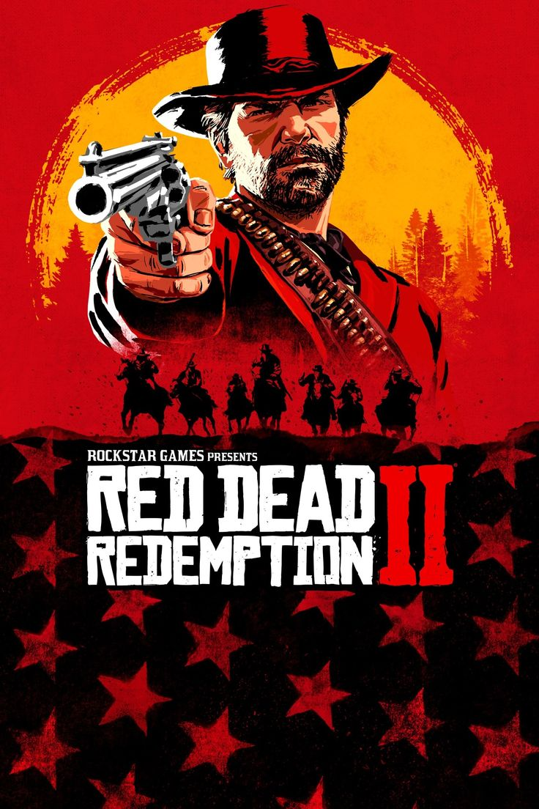

RDR II XBOX COVER
Red Dead Redemption II is a 2018 action-adventure game developed and published by Rockstar Games. The game is the third entry in the Red Dead series and a prequel to the 2010 game Red Dead Redemption. The story is set in a fictionalized representation of the United States in 1899 and follows the exploits of Arthur Morgan, an outlaw and member of the Van der Linde gang, who must deal with the decline of the Wild West while attempting to survive against government forces, rival gangs, and other adversaries. The game is presented through first- and third-person perspectives, and the player may freely roam its interactive open world. Gameplay elements include shootouts, robberies, hunting, horseback riding, interacting with non-player characters, and maintaining the character's honor rating through moral choices and deeds. A bounty system governs the response of law enforcement and bounty hunters to crimes committed by the player.